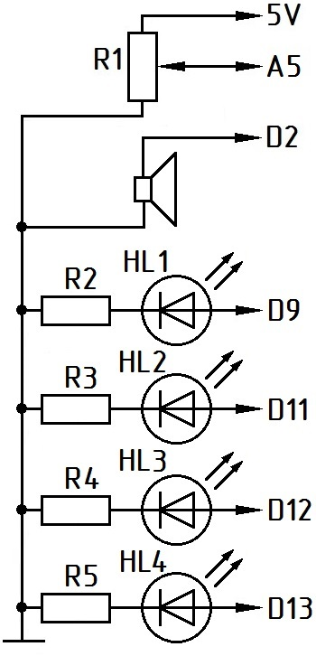
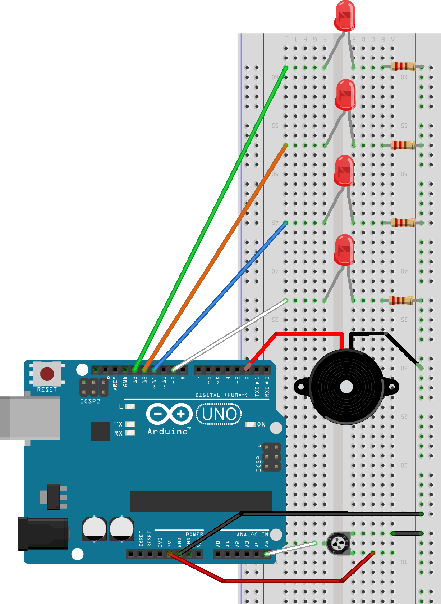

Электронный метроном на Arduino
Компоненты
- микроконтроллер Arduino Uno;
- светодиод (любых цветов) - 4 шт.;
- резистор постоянный 220 Ом - 4 шт.;
- пьезодинамик;
- переменный (подстроечный) резистор;
- макетная плата;
- соединительные провода.


Скетч
int p, bpm, i; void setup() { for(p=10; p<14; p++) pinMode(p,OUTPUT); // задаём режимы выводов с номерами 10-13 } void loop() { int bpm=analogRead(A5)/4; // сигнал потенциометра уменьшаем в 4 раза if (bpm<10) bpm=10; //Предотвращаем деление на ноль // Если потенциометр в нуле, поднимаем значение bpm до 10 ударов в минуту for(i=13; i>9; i--) { digitalWrite(i,HIGH); // Включаем пин номер i if (i==10) tone(2, 5000, 100); // Если доля сильная, звук на частоте 5000 Гц 100 мс, else tone(2, 500, 100); // если слабая - 500 Гц 100 мс delay(60000/bpm); // Задержка равна 60 с делённым на количество ударов в минуту digitalWrite(i,LOW); //Выключаем пин i } }